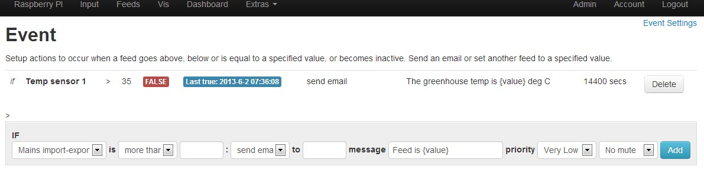

Hi,
Thanks for the help the other day. My rasppi stuff is all back up.
The only thing outstanding is for me to convert one of my own modules (https://github.com/elyobelyob/mqtt) to work. It's based on rasp_pi module. Did Trystan do the conversion? Can anyone give an overview of what needs fixed up?
Will try and have a go tomorrow evening ..
Am also not sure my events module is working .. have done a git pull. Would be useful to get my MQTT stuff up as that is much easier to test events against (very rapid data input).
Thanks
Re: Converting old plugin to suit new system?
Events Module
Will not work just yet!
I have submitted a git-pull request for the feed_model.php to be updated, which includes the necessary changes to make it work, but so far the OEM team have not authorized the update.
I must add, that the revised coding has been made by madmatt, and not me!!
Paul
Re: Converting old plugin to suit new system?
Am pretty sure that Trystan accepted some changes just the other day ...
Re: Converting old plugin to suit new system?
elyobelyob - Am pretty sure that Trystan accepted some changes just the other day ...
Yes, two files in the event module was updated by Madmatt and was rolled out via git about a week ago. However, there is a third file (feed_model.php) that needs a slight change to ensure that the event module functions.
I've sent Trystan a git pull request for the feed_model.php update, and once that file is merged, the event module should work.
I currently am using the event module to alert me if I forget to open the greenhouse windows & door (ie when greenhouse temperature exceeds 35 degC !!) and it's working fine.
Paul
Re: Converting old plugin to suit new system?
Hi. Downloaded latest events last night and still not working. From above seems feed.model.php still has to be merged. Check in later.
Peter
Re: Converting old plugin to suit new system?
Hi Paul and elyobelyob.
Do not know if I configured something wrong in my event module but I do not get emails to my Gmail account.
Here is my setup:
Regards.
Re: Converting old plugin to suit new system?
Lobo, as I explained above, it will not work until the feed_model.php is updated, I have sent another pull request, as I am not 100% sure that my first request was done correctly (my fault - I can't get my head around Git!)
If you can't wait till then, I've zipped & attached the amended file. Back up your existing feed_model.php and replace it with the attached.
It will work for email alerts, but further work needs doing as it currently sends alerts to the email address which is input in the 'account' page of your emoncms website (not emoncms.org). Forum member Madmatt is doing further development & enhancement work on the module.
You will need to visit your 'admin' page & run 'update & check', and then reboot.
Paul

Re: Converting old plugin to suit new system?
Hi Paul,
Thanks a mil, I really wanted this feature it a great way to show my dashboard is really live. Thanks for providing the feed_model updated and fyi it works. I haven't tried notification part yet but sounds really useful.
Cheers
Peter
Re: Converting old plugin to suit new system?
Paul sorry, had to be did not quite understand. My English is not bad but sometimes understand other things. I beg your pardon. :-)
Many thanks for the explanation, the file and your patience. :-)
Re: Converting old plugin to suit new system?
I'm excited. I already receive emails. :-)
Now it works! Finally!! :-)
Very appreciated ...
Re: Converting old plugin to suit new system?
@Lobolobo: where are you from ? from the node names I'd guess Spain or Italy .. if so I am from Italy too if you need clarifications in a language that you better understand.
Regards
////Edit - rest of post content moved to it's own 'sticky' thread here - Paul
Re: Converting old plugin to suit new system?
Hi, Madmatt, thank you very much for your information and for your offer. I´m from Spain.
In terms of the new features you have planned, have looked great. Thank you very much for the work of developing the Event module and of course, thank you very much to elyobelyob.
Follow with interest all your changes.
Best regards and very appreciated.
Re: Converting old plugin to suit new system?
Hi Madmatt,
Just to add to above comments the events plugin really great. Just starting to use same so I will post new feature ideas as I go but for now what your planning sounds great. Much appreciated.
Thanks
Peter